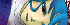
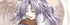
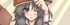
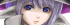

お絵かき掲示板 皆様のイラストギャラリー
人気キャラ特別企画編
－注意書き－
お絵かき掲示板にいただいた
名作イラストの数々をご紹介！
ここには企画お絵かき掲示板で行われた
「
人気投票上位10人のキャラ
」のお題にて
描かれた物を掲載しています。
これら素晴らしい絵を描いてくださった作者の皆様、
本当にありがとうございます！
→の方の名前
を選択していただければ
各キャラクターの画像を閲覧できます。
お題リスト
（2007/09/01当時の人気投票順位）
1位

サユキ
[シルノ]
2位
ナナシ
[シルノ]
3位

ウリユ
[幻想譚]
4位

セト
[見聞録]
5位
クロウ
[シルノ]
6位
女主人公
[幻想譚]
7位
シーナ
[見聞録]
8位
リクレール
[幻/ｼﾙﾉ]
9位
スケイル
[シルノ]
10位

シェルティー
[シルノ]
※見聞録＝シルフェイド見聞録 幻想譚＝シルフェイド幻想譚
シルノ＝シルエットノート の略
フレームが表示されていない方はクリック